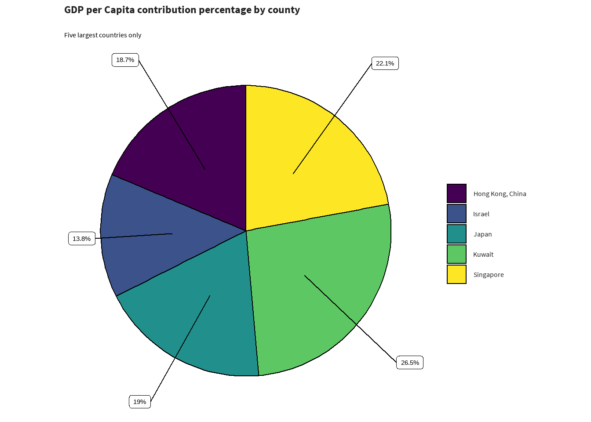

A note on colour palettes, branding and accessibility
Putting thought into requirements and responsibilities
The goal of colour palettes is to improve storytelling with data, whether it is to show continuous change in a value, differences between distinct categories or to highlight a specific category that you want to highlight.
Some questions we need to think about when choosing colour:
- Is it accessible for everyone, specifically for those with colour blindness/color vision deficiency?
- Is there an association with the colour we use (ie green is good/positive, red is bad/negative)
- Does it fit within the SCC brand?
Sticking to the Suffolk County Council brand, where possible
The Suffolk County Council has its own colour schemes, the recognisable blues and orange found on the website.
This blue (#2d6ca2) is used as the primary colour in graphs, with orange (#e8850c) as the secondary colour. Where applicable, the light blue (#e2eefa) can used as a tertiary colour - but note that this not easily visible against white background (consider using a black outline).
Blue and Orange are colours that are distinct for most common forms of colour blindness/color vision deficiency. However, different types of graphs have vastly different requirements to tell a story, and where the number of categories exceeds three colours the SCC palette is not sufficient.
No need to reinvent the wheel - use Viridis
Therefore, instead of designing our own colour palette, I’d recommend the use of viridis, for graphs with more than three categories. This package has visually appealing colour palettes, and improve graph readability for readers with common forms of color blindness and/or color vision deficiency. Note that for some specific forms, you may have to choose another palette within viridis (for example seaborn, or turbo).
library(sccthemes)
library(gapminder)
library(dplyr)
asia_pop <- gapminder |>
filter(year == 1997 & continent == "Asia") |>
select(country, lifeExp, pop, gdpPercap) |>
top_n(5)
asia_pop$country <- forcats::fct_drop(asia_pop$country)
scc_piechart(
asia_pop,
asia_pop$gdpPercap,
asia_pop$country,
title = "GDP per Capita contribution percentage by county",
subtitle = "Five largest countries only"
)